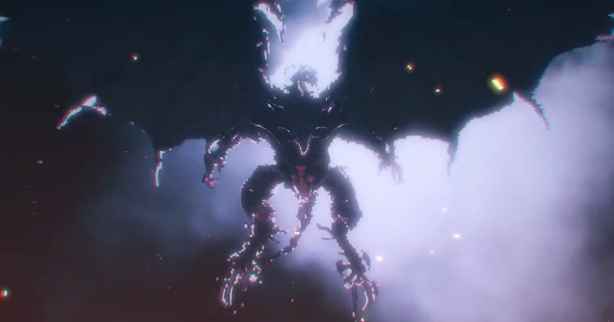

2026-10-21 · 单机深读
史克威尔艾尼克斯的《最终幻想：共鸣（FINAL FANTASY RESONANCE）》10 月 22 日登陆 PS5、Xbox Series X|S、Switch、Switch 2 与 PC（Steam 版部分地区顺延到 10 月 23 日），标准版 49.99 美元、数字豪华版 59.99 美元，支持简体中文。 这不是又一部正统续作，而是系列三十九年来第一次用 HD-2D 做的《最终幻想》，剧本来自已经停运的手机游戏《最终幻想 勇气启示录（FFBE）》第一季。 解禁的评分很体面：Metacritic PS5 版 29 家媒体 85 分、PC 版 88 分，OpenCritic 约 45–52 家媒体 85 分、九成推荐。但九份十分制评分能从 6 跨到 10——Famitsu 四位评测全给 9 分、DualShockers 给 10 分，Eurogamer 与 VGC 却都只给 3/5。 本文想处理的是更值得问的那件事：一款停运抽卡手游，凭什么变成了买断单机，以及它到底成功到什么程度。

不谈卖相反响，先看它到底在玩什么。
大部分「手游改单机」的做法，是把剧情抠出来、把抽卡删掉、把体力条删掉，然后卖 60 美元。Resonance 做的不是减法，是一次替换。
FFBE 当年最上瘾的那件事，从来不是它的回合制战斗，而是「把历代 FF 主角抽到手」——那是一种把整个系列的历史情感压缩成一次开箱的快感。Resonance 把这个钩子原封不动地留了下来，只换掉了获取动作：你不再抽，而是走到水晶圣地、听完一段英雄的短故事，然后确定性地拿到他。 收集欲留下了，随机性留下了（圣地分布在世界各地，先遇到谁依然是探索的结果），唯独付款码被删了。
这不是道德选择，是设计上的精明。它承认了「想收集历代主角」这个欲望本身没有错，错的是它被绑定在付费随机上。所以玩家在 PCGamesN 的评测里会说自己「像集人形宝可梦一样」在集幻兵——这句话恰好证明替换是成功的：行为模式没变，付费环节消失了。
以前的《最终幻想》，历代角色客串是彩蛋：一个联动皮肤、一场隐藏 Boss、一句台词。玩家对彩蛋的标准是「惊喜」。 Resonance 把这件事升级成了核心系统：幻兵就是你的职业池、你的 build 材料、你的终结技来源。斯考尔的「二连动」可以插给任何角色，于是你在 SmashPad 的评测里能看到那种典型的爽点——「我打 Boss 起手 16 段连招，它一步都没走出来」。
但系统化的致敬要按系统的标准被考核，而不是按彩蛋的标准被惊喜。GameSpot 给 7 分时的缺点栏写着一句很关键的话：「缺少更多熟悉的《最终幻想》系列角色，令人失望。」 换成彩蛋逻辑，这句话不成立；换成职业池逻辑，它完全成立——玩家开始数数量、比强度、问「为什么有蒂娜没有某某」。这是把情怀做成数值层的必然反噬。
评分从 6 到 10 的跨度很惹眼，但更值得注意的是：好评和差评其实在指同一件事。 IGN 8 分说对叙事的部分「感到不足」；Nintendo Life 8 分说故事「有点干」却依然推荐；VGC 与 Eurogamer 的 3/5 说它在 SE 自家的 HD-2D 阵容与 Pixel Remaster 面前不够必要；GameSpot 7 分承认「跌跤但闪光更多」。 也就是说，视觉与战斗是共识的优点，剧本与世界观的薄弱是共识的缺点，四分的离散度不是审美分歧，而是「工艺扛着一份带包袱的剧本」时，每个人对包袱的忍耐阈值不同。
而这份包袱是结构性的，不是文笔问题。gacha 的剧情按月更，夹在活动与卡池之间写，每一拍都为「短会话、明天还愿意回来」服务。把它压成 25 小时一次性买断，那个节奏就从优点变成了缺点：章节短、地下城一次性、转折密度诡异。 改台词很容易，改一条故事弧线的形状是大工程——从各家评测的描述看，SE 做了前者，没做后者。
SE 反复强调本作是 rebuild 而不是 port。这句话通常只是公关措辞，但这次它是可以验证的。 gacha 的美术投入是立绘优先：每个角色一张能在召唤界面几百像素里读得懂的 splash 图，加一个基本只会摆 pose 的小战斗 sprite。 HD-2D 要的正好相反：全身 sprite、走路跑步待机施法受击的完整动作，放在分层的立体布景里，好让移轴与光柱有东西可以分离。 这两套资产不能互相换算，只能重画。从已公开的战斗画面看，重画确实发生了——这也是为什么它看起来不像「手机游戏搬上电视」，而像一款认真做的主机 RPG。
最后说一个容易被忽略的细节。这段剧情当年在手机上是免费的。今天它的价格是 49.99 美元。 在这个前提下，SE 把完整第一章（3–5 小时）免费放出来、还允许存档继承，不是慷慨，是必要的定价补偿——价格锚点从 0 跳到 50，唯一的解法就是让玩家先玩到再决定。 巧的是，同一天发售的《愚者不灭（Stupid Never Dies）》也做了同一件事：约 2 小时的免费试玩、存档可继承、豪华版 48 小时提前解锁。 2026 年 10 月 22 日这一天，两款定价在 200 元上下的日本游戏，不约而同地把「试玩版 + 存档继承」当成发售标配。这大概是今年最实在的一条行业信号。
我们的评分：8.3 / 10（战斗系统 8.8 · 视听与配乐 9.2 · 剧本与世界观 6.8 · 体量与性价比 8.5）
我们的观察：本次真正被解决的行业问题不是「手游 IP 能不能改单机」，而是「抽卡最上瘾的那部分能不能脱离抽卡存在」。Resonance 给出的答案是能——只要你愿意把随机付费换成确定性探索，并把情怀从彩蛋层抬到数值层。
我们的观点：把它当成「系列新作」会失望，当成「一份被抢救出来的 FFBE 第一季」会很满足。GameSpot 那句「把一段好故事从服务型游戏的湮灭里救了出来」是这几天最准的描述。它的问题不在于平庸，而在于它背着一个为另一种消费节奏写的故事。
我们的案例 / 对比：
| 作品 | 与原作关系 | 收集对象 | 获取方式 | 最薄弱的一环 |
|---|---|---|---|---|
| 最终幻想：共鸣 | 停运手游 FFBE 第一季重建 | 历代 FF 主角（幻兵） | 探索水晶圣地，确定性获得 | gacha 节拍压成线性后的叙事 |
| FFBE（原版手游） | — | 历代 FF 主角（兵员） | 卡池随机抽取，付费 | 数值膨胀与内容消耗速度 |
| 歧路旅人 系列 | HD-2D 原创 | 八名旅人 | 剧情推进 | 故事之间互不咬合 |
| Pixel Remaster | 旧作高清复刻 | 无（原样保留） | — | 系统现代化不足 |
| DioField Chronicle（同开发商） | 原创 | 佣兵与技能 | 招募与培养 | 叙事野心大于执行 |
我们的实验（给已经打算进场的玩家的验证清单）：
《最终幻想：共鸣》值得被记住的理由，不是「SE 又炒了一次冷饭」，而是它完成了一次少见的机制移植：把抽卡游戏最有效的那个钩子——收集历代主角——从付费随机的壳里取出来，装进了探索与养成的壳里，并且没有让它在移植过程中失效。 它没能解决的部分同样清楚：一个按月更写出来的故事，被压进 25 小时之后会露出接缝，而这次 SE 只抚平了台词，没有重塑弧线。 如果你想要的是「一台能玩 30 小时的老派回合制 FF」，它现在就在那儿，而且完成度比预期高；如果你想要的是「又一个能记住十年的 FF 故事」，那就先玩 3 小时免费试玩，再决定要不要花那 50 美元——SE 把试玩版做到能继承存档，本来就是让你这么干的。